French
French
 English
English
✨ Welcome to the fascinating universe of Sword Art Online ✨
🌍 Enter a universe where adventure knows no bounds! Be transported through breathtaking landscapes, mysterious forests of Aincrad 🌲 to the enchanting skies of Alfheim Online 🧚♂️. Each environment is designed to amaze, where magic and fantasy meet to create unforgettable worlds. Mysteries and dangers await you 🌟.
👥 Meet memorable characters who will mark your epic journey. Each carries a unique story, with their dreams, fears, and hopes ❤️. From the brave Kirito to the fearless Asuna, every encounter adds depth to this adventure. You will be surrounded by loyal allies and formidable foes, each playing a crucial role in your quest 🛡️.
⚔️ Experience epic adventures where every decision can change your destiny ⚡. In the universe of Sword Art Online, every quest is a test of courage and strategy. Each floor of Aincrad is a battlefield where colossal boss fights 🐉 challenge your worth. Solve puzzles 🧩, face mysterious dungeons 💥, and discover a universe full of challenges!
🔮 Explore fascinating worlds, rich in magic and futuristic technology. In Sword Art Online, virtual reality becomes an endless adventure. Discover the secrets of Alfheim Online 🧚♀️, where elves master flight and magic ✨, or dive into the intense tactics of Gun Gale Online, where every shot counts 🔫. These worlds are filled with wonders and hidden dangers waiting to be explored.
🌟 Beyond the adventure, Sword Art Online is a story of friendship, courage, and self-discovery. Even in a virtual world, the bonds created are powerful and real ❤️. Every decision, every friendship, and every trial you overcome will shape your own legend ✨.
⚡ Get ready for an unforgettable adventure! Whether you’re here to explore, fight, or simply be amazed, Sword Art Online promises an immersive experience filled with emotions, mysteries, and endless discoveries 🌐🎮.
Personnages
Aincrad Arc
Kirito (Kazuto Kirigaya)
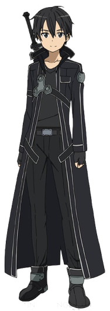Asuna Yuuki
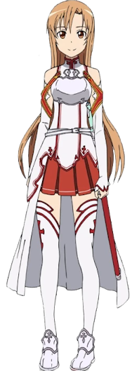Klein (Ryotaro Tsuboi)
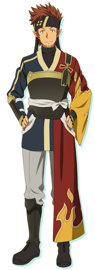Agil (Andrew Gilbert Mills)
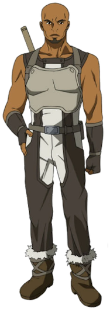Silica (Keiko Ayano)
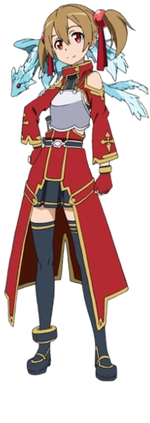Lisbeth (Rika Shinozaki)
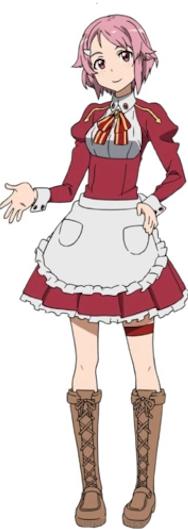Yui

Sachi
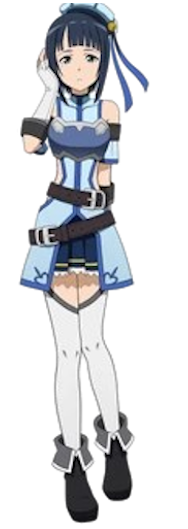Diavel
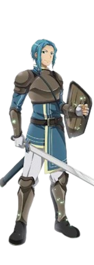Kuradeel
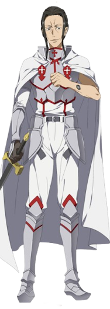Kibaou
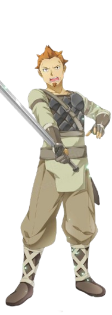Heathcliff (Akihiko Kayaba)
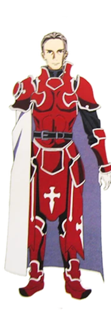Argo
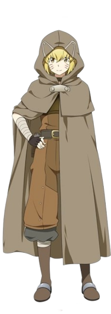Thinker
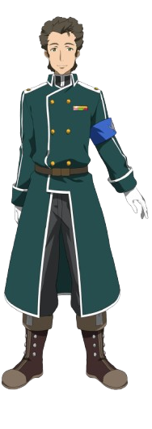Yulier
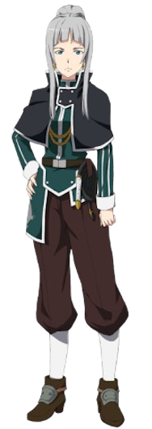Johnny Black

PoH (Prince of Hell)
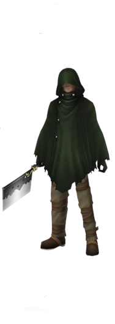Grimlock
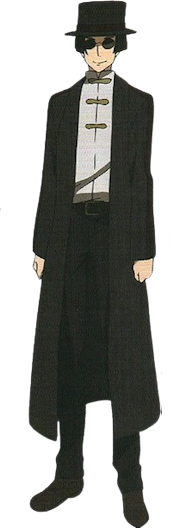Yolko
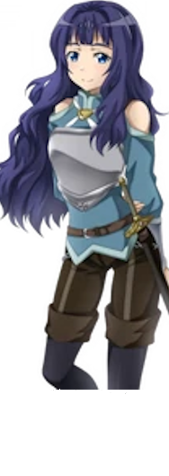Fairy Dance Arc (Alfheim Online)
Leafa (Suguha Kirigaya)
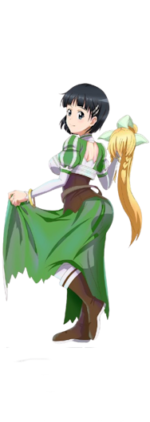Oberon (Nobuyuki Sugou)
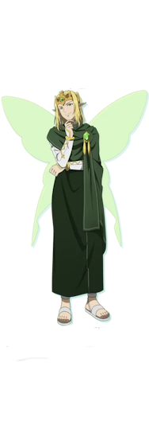Recon (Shinichi Nagata)
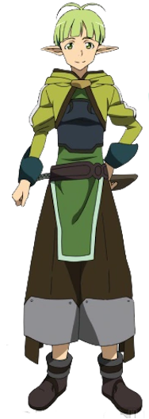Eugene
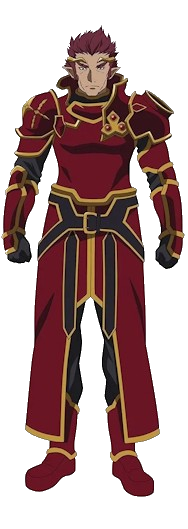Sakuya
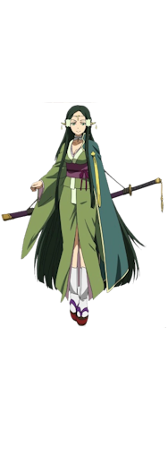Alicia Rue

Tonky
Phantom Bullet Arc (Gun Gale Online)
Sinon (Shino Asada)
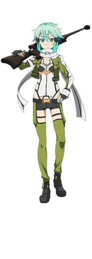Death Gun (Sterben)

Shinkawa Kyouji

Yamikaze
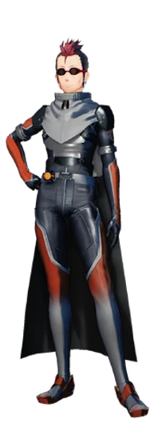Pale Rider

Sterben (Shouichi Shinkawa)
.png)
Dyne
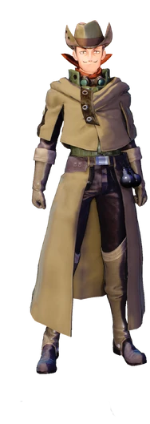Mother's Rosario Arc
Yuuki Konno

Siune
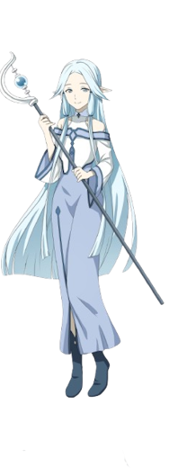Jun
Tecchi
Nori
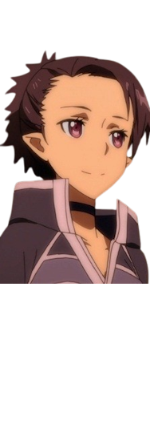Talken
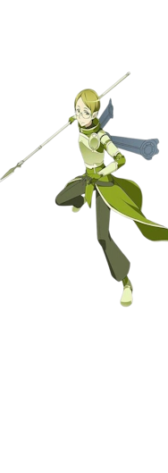Alicization Arc
Eugeo
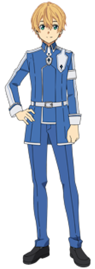Alice Zuberg

Quinella (Administrator)
.png)
Cardinal
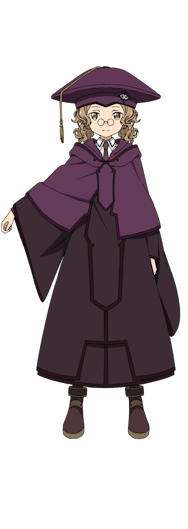Bercouli Synthesis One

Fanatio Synthesis Two

Deusolbert Synthesis Seven

Eldrie Synthesis Thirty-One

Chudelkin
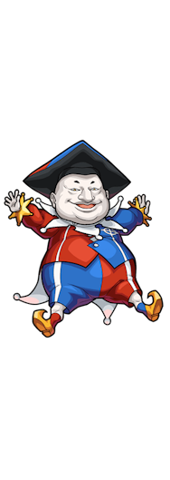Sortiliena Serlut

Ronye Arabel

Tiese Shtolienen

Humbert Zizek

Raios Antinous

Lipia Zancale

Shasta
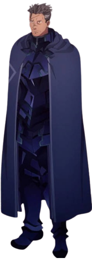Ishkan
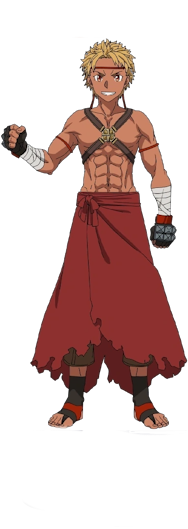Lilpilin
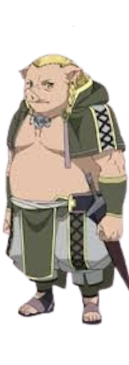War of Underworld Arc
Gabriel Miller (Subtilizer)
.png)
Vassago Casals

Critter
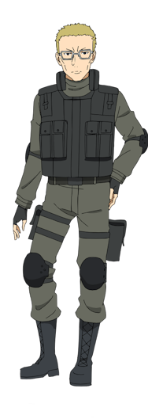Iskahn
Sheyta
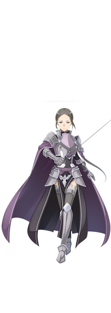Renly Synthesis Twenty-Seven

Yanai

Personnages des jeux vidéo
Strea

Philia
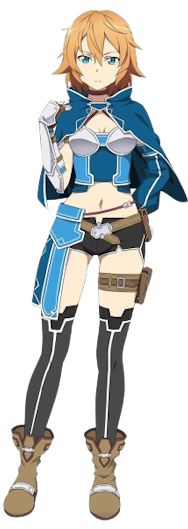Rain
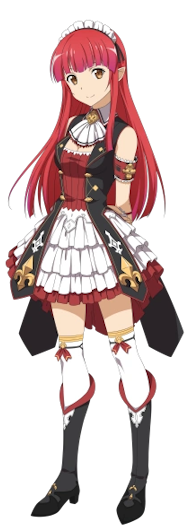Seven (Professor Nanairo)
.png)
Eiji Nochizawa (Nautilus)
.png)
Yuna (Yuuna Shigemura)
.png)
Tia
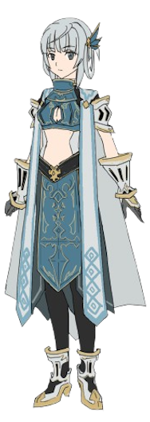Premiere
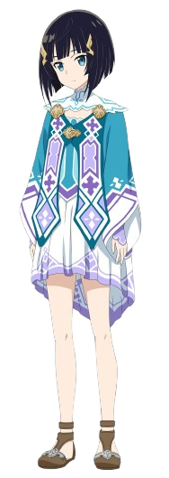Kureha
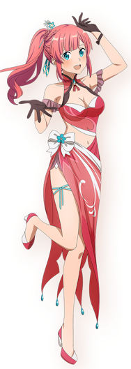Zeliska
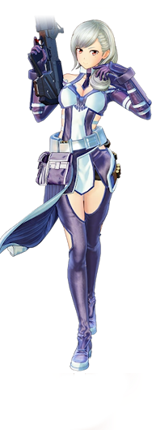Itsuki
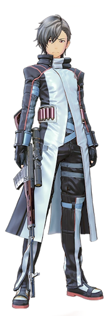Bazalt Joe

Character Name
✨ The World of SAO ✨
🌍🎮 The world of Sword Art Online (SAO) is a captivating virtual universe where players interact in fascinating digital environments through advanced virtual reality technology. Immerse yourself in this world where every detail is designed for total immersion.
The adventure begins in Aincrad, an imposing 100-floor tower, where each level reveals a unique world filled with challenges and wonders. From lush forests 🌲 to snowy mountains 🏔️, through medieval cities 🏰 and dangerous dungeons full of fearsome creatures 🐉, Aincrad is a world where cooperation is key. Players must team up 🤝 to defeat powerful bosses and progress to higher floors. Each step brings you closer to freedom. 🏰🌲🗡️
In Alfheim Online (ALO), exploration takes on a different form with a fairy-like universe where players can fly 🧚♂️ using wings unique to each elven race. ALO emphasizes freedom and magic ✨, featuring enchanting aerial landscapes, mystical forests 🌳, floating fortresses 🏰, and kingdoms divided into factions. A world where imagination takes flight. 🧚♂️🌌✨
Gun Gale Online (GGO) offers a completely different atmosphere with a post-apocalyptic world 🌆 dominated by firearms 🔫. In this world, arid landscapes 🏜️, ruined cities 🏙️, and strategic battlefields provide a tense and competitive experience. Every shot and decision counts here. 🏜️🔫💥
Finally, the world of SAO expands with realms like Underworld, an advanced virtual reality 🧠 where characters have their own consciousness. In this universe, time and space ⏳ operate under unusual rules, creating a profound and unique experience. Each SAO world is vast 🌐, rich in detail, and full of adventures to discover. 🌐🕰️🌟
🎨 Sword Art Online Creator 🎨
🖋️ Kawahara began Sword Art Online in 2002 as a light novel, a popular type of novel in Japan, often illustrated and targeted at young adults. What started as a personal project quickly captivated a broad audience thanks to a complex plot and deeply relatable characters. 🌟📚
🌍 The universe of Sword Art Online is a unique blend of virtual reality and epic adventures, where players are immersed in vibrant worlds. Kawahara brought these worlds to life with fascinating landscapes and emotional challenges, while exploring deep themes like survival, freedom, and self-discovery. 💡🕹️🌲
🎞️ The series was later adapted into manga, anime, and video games, propelling Kawahara onto the international stage. The Sword Art Online anime, released in 2012, played a pivotal role in this global success thanks to its stunning visuals and epic soundtrack. 🎥📀🎶
❤️ What sets Reki Kawahara apart is his ability to combine futuristic science-fiction with powerful emotional themes like friendship, love, and loss. He also explores the boundaries between virtual and real worlds, questioning the potential dangers of complete immersion in fictional realities. 🧑🤝🧑💕🌌
🏆 In recognition of his significant influence on the industry, Kawahara has received numerous literary awards. His work continues to inspire generations of creators and fans around the globe. 🌟✍️
✨ Additional Information ✨
*Sword Art Online (SAO)* is much more than just a series about video games 🎮. It delves into deep themes such as reality, technology, and human relationships 🤝. Through its various arcs, SAO explores existential questions while offering an immersive adventure full of mystery and emotion 💫.
The concept of virtual reality in SAO invites us to reflect on the blurred boundary between the real world 🌍 and digital worlds 🌐. Players, immersed in hyper-realistic virtual environments, must not only survive physically but also face mental and emotional challenges 💥. This raises fascinating questions: What happens when reality and fiction intertwine? 🧠
Moreover, Sword Art Online explores the psychology of players 🧘♂️, particularly how online interactions influence social dynamics and behavior 💬. Every player, whether hero or antagonist, faces moral dilemmas and choices that reveal their true character 💡. Online gaming becomes a mirror of society, where competition, cooperation, friendship, and betrayal intertwine 👫.
Another recurring theme is solitude 🥀, seen through Kirito's journey as he often finds himself isolated in his quest to protect those he loves. However, as the story unfolds, deep bonds are formed, and friendship becomes a powerful force to overcome challenges 🌟. These relationships are not limited to human players: AIs like Yui 🧑💻 and other virtual creatures also play an essential role in this universe.
Finally, SAO demonstrates that video games are not just entertainment 🎮. They can become living worlds 🌌 where players create meaningful experiences, learn lessons about themselves and others, and explore new horizons. The adventures in SAO remind us that, even in a fictional world, emotions and relationships are very real ❤️.
Technology and innovations: SAO also anticipates the future of immersive technologies 🔮, addressing topics like augmented reality and advanced virtual reality. The NerveGear, the device used by players to dive into SAO's worlds, inspires dreams of a future where the boundary between real and virtual almost disappears 💻🕶️. But it also warns us about the risks of excessive dependency on these technologies, highlighting the importance of staying grounded in the real world 🌍.
With epic battles ⚔️, unforgettable friendships 🤗, profound moral dilemmas 🧐, and futuristic technologies 🔥, Sword Art Online is a true journey through time, space, and the human soul. Each adventure is a reminder that, even in a game, the quest for happiness, freedom, and connection is universal 🌟💫.